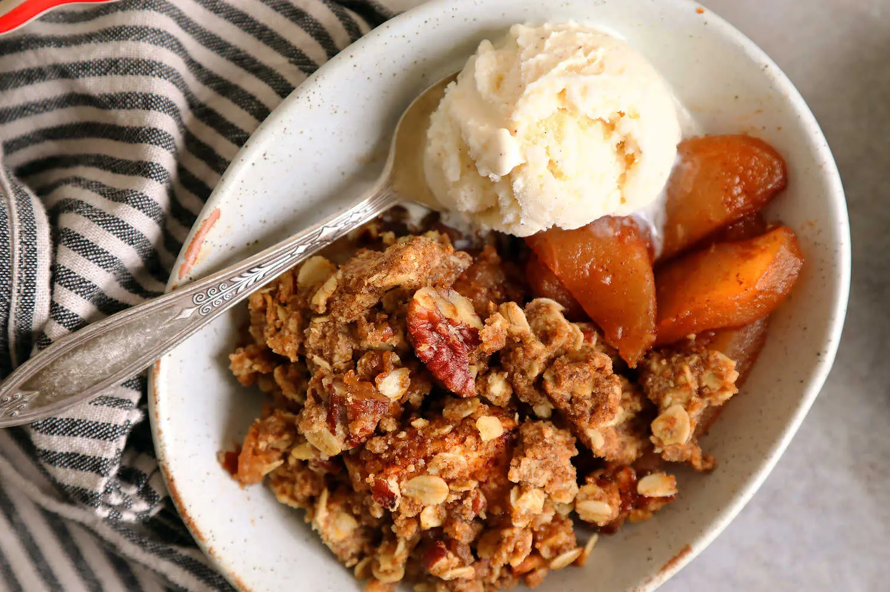

Apple Crisp

Summary
Apple crumble is one of those desserts all cooks should have in their back pockets. It’s a no-fuss favorite that works as well for dessert with a big scoop of ice cream as it does for breakfast with some plain, whole-milk yogurt. This recipe starts with a hefty crumb mixture, studded with pecans and old-fashioned rolled oats. Plenty of butter and sugar ensure the crumb stays crisp after baking, creating a delightful textural contrast between topping and tender fruit. Using a mix of sweet and tart apples that soften at slightly different rates also keeps this recipe interesting.
Ingredients
- 12 tablespoons/170 grams unsalted butter, melted, plus more for buttering the pan
- 1½ cups/180 grams all-purpose flour
- 1½ cup/300 grams packed dark brown sugar, divided
- 1 cup/80 grams old-fashioned rolled oats
- 1 cup/113 grams pecans, chopped
- 1 teaspoon kosher salt
- 3 ½pounds mixed apples, such as Granny Smith, Macintosh, and Pink Lady, peeled, cored, and cut into ½-inch wedges (about 8 medium apples)
- 1 tablespoon ground cinnamon
- 2 tablespoons fresh lemon juice
Directions
- Heat the oven to 350 degrees. Butter a 13-by-9-inch baking dish. In a medium bowl, combine the flour, 1 cup/200 grams of the brown sugar, oats, pecans and salt. Add the butter, and stir with a fork until the crumbs are evenly moistened.
- Add the apples to the buttered baking dish and toss with the remaining ½ cup/100 grams brown sugar, cinnamon and lemon juice. Spread the apples into an even layer. Press the crumb mixture together to create clumps of different sizes, and sprinkle on top of the apples. Transfer to the oven, and bake until the apples are tender and the crumb topping is crisp and deep golden brown, about 50 to 60 minutes. Serve warm or at room temperature.
Home